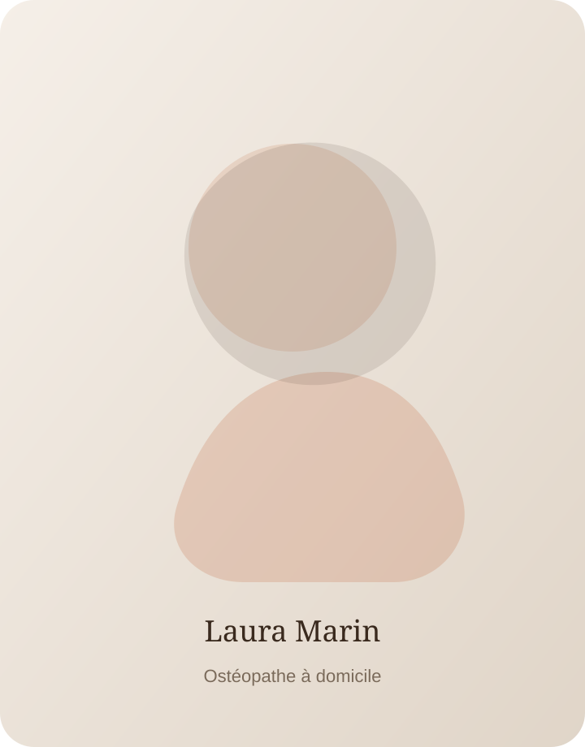

Adultes
Tensions du quotidien, douleurs musculo-squelettiques, fatigue et maintien de la mobilité.
Laura Marin vous accompagne à domicile à Reignier-Ésery et alentours avec une approche douce, précise et personnalisée.
Je prends le temps de vous écouter, de comprendre votre histoire et vos contraintes afin de proposer un accompagnement progressif, respectueux et adapté à votre quotidien.

Des consultations adaptées à chaque âge et à chaque rythme de vie, toujours dans le respect de votre confort.
Tensions du quotidien, douleurs musculo-squelettiques, fatigue et maintien de la mobilité.
Accompagnement de la grossesse, du post-partum, des cycles et des inconforts associés.
Préparation, récupération, prévention et accompagnement des tensions liées à la pratique.
Consultations douces pour les inconforts fonctionnels et l'accompagnement du développement.
Deux ressources simples pour mieux comprendre certains motifs de consultation et le déroulement d'une séance.
Un support informatif pour comprendre les tensions associées et les situations qui nécessitent un avis médical.
Télécharger gratuitement →Un guide court pour découvrir l'approche globale, le déroulement d'une consultation et les précautions utiles.
Télécharger gratuitement →Des retours d'expérience sur l'écoute, la douceur et la clarté des consultations à domicile.
“Une praticienne très douce, qui prend le temps d'expliquer chaque étape. Le format à domicile est vraiment rassurant.”
“Consultation attentive et professionnelle. J'ai apprécié les conseils simples à mettre en place au quotidien.”
“Très bon contact avec notre bébé, beaucoup de délicatesse et une vraie écoute des parents.”
Consultations à domicile à Reignier-Ésery et dans les communes voisines.
La prise de rendez-vous se fait directement par téléphone ou par email. Je réponds généralement entre 8h et 19h, du lundi au samedi.
Appelez-moi pour échanger sur votre situation et organiser une consultation à Reignier-Ésery ou alentours.
06 68 94 57 22